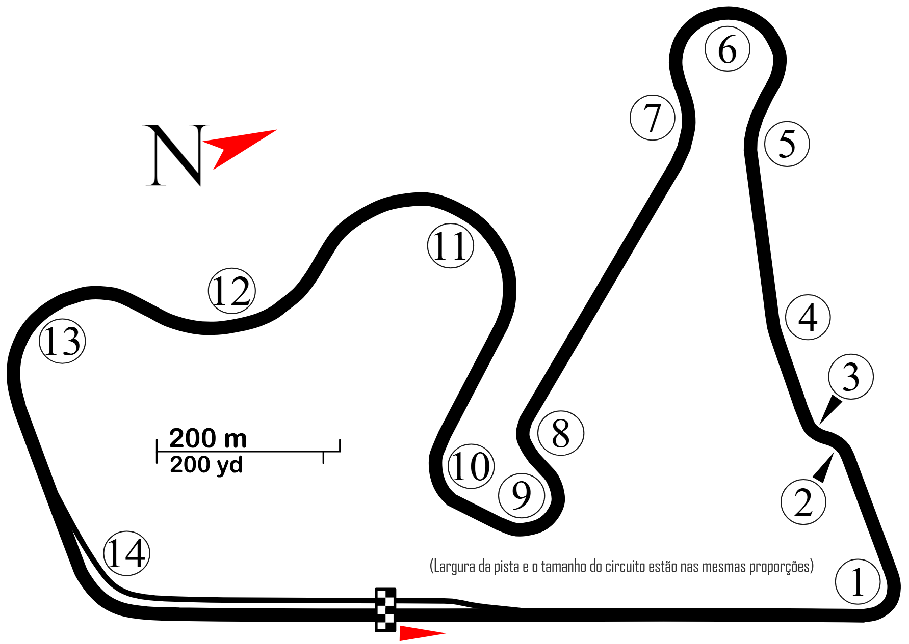
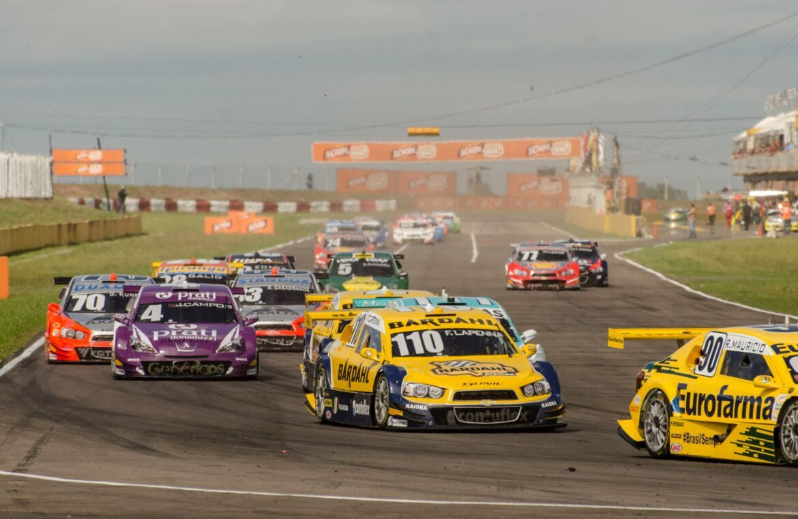
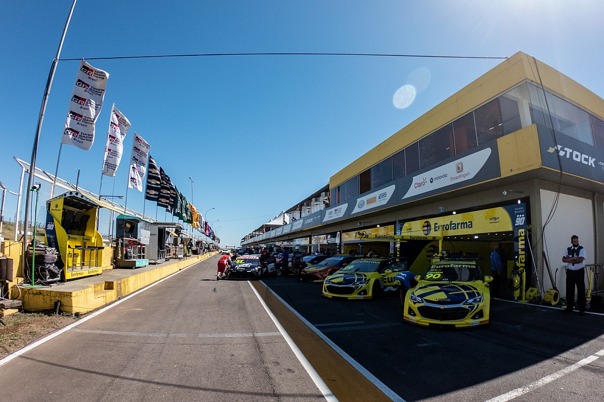
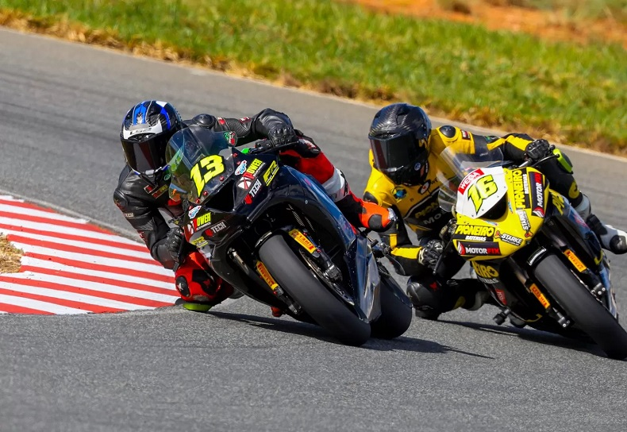
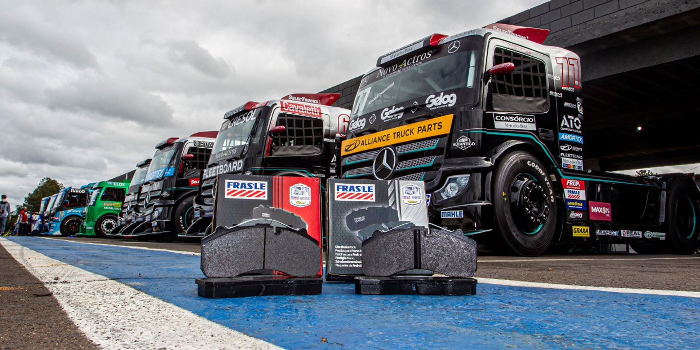
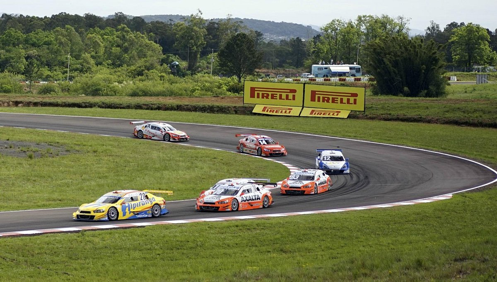
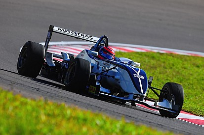

AISCS
Autódromo Internacional de Santa Cruz do Sul

Experimente a emoção do automobilismo
Um dos mais modernos e seguros autódromos do Brasil, palco de grandes competições como Stock Car, Fórmula 3 e Fórmula Truck.
Sobre o Autódromo
Localizado no km 102 da rodovia RS 471, o Autódromo Internacional de Santa Cruz do Sul é reconhecido como um dos mais modernos e seguros do Brasil.

Localização Estratégica
Situado no km 102 da rodovia RS 471, oferece fácil acesso e infraestrutura completa para grandes eventos.
Segurança FIA
Certificado pela Federação Internacional de Automobilismo, garantindo os mais altos padrões de segurança.
Pista Técnica
3.530,7 metros de extensão com 14 curvas desafiadoras, sendo 7 à direita e 7 à esquerda, de alta, média e baixa velocidade.



Eventos em Destaque
Palco das principais competições do automobilismo e motociclismo brasileiro

Fórmula Truck
Uma das categorias mais emocionantes do automobilismo brasileiro, com caminhões de corrida que chegam a mais de 1.200 cavalos de potência. O autódromo recebe regularmente etapas do campeonato nacional.
Próxima etapa em breve
Etapa do campeonato nacional com os melhores pilotos do país disputando em alta velocidade.

Competição que revela os futuros campeões do automobilismo nacional e internacional.
As principais categorias do motociclismo nacional em disputas de alta velocidade e técnica.
Track days, lançamentos de produtos e eventos corporativos em um ambiente único.
Tours educativos e experiências imersivas para grupos e escolas interessadas no automobilismo.
Arquibancadas com excelente visibilidade e infraestrutura completa para uma experiência inesquecível.
Segurança em Primeiro Lugar
Certificações e medidas que garantem a segurança de pilotos e espectadores
Certificação FIA
Reconhecido pela Federação Internacional de Automobilismo como um dos mais seguros do Brasil.
Equipe Especializada
Profissionais treinados e equipamentos de última geração para atendimento de emergência.
Infraestrutura Moderna
Barreiras de segurança, zonas de escape e sistemas de comunicação de última geração.
Calendário de Eventos
Acompanhe todos os eventos programados para o Autódromo Internacional de Santa Cruz do Sul
Agosto 2025
Etapa da Copa Truck 2025 com os caminhões mais rápidos do Brasil.
Agende sua Visita
Conheça de perto um dos autódromos mais modernos do Brasil. Preencha o formulário e entraremos em contato via WhatsApp.
Viva a emoção do automobilismo
Seja parte da história do automobilismo brasileiro. Agende sua visita ou participe de nossos eventos.